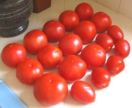

SAFARI
Users
- Buying Tomatoes
- Storing Tomatoes
- Peeling Tomatoes
- Seeding Tomatoes
- Slicing & Dicing Tomatoes
- Washing Tomatoes
- Ripening Tomatoes
- Main Tomato Page
Buying Tomatoes
Produce stands, Produce Markets and Farmer's Markets are your best bet for getting tomatoes with some flavor - and at an acceptable price. I'm always stunned at what the big chain supermarkets are charging compared to what I pay at Sunland Produce (often 3 times as much).
It's awfully hard to tell how good tomatoes are without sampling. Sometimes the reddest ones are pasty and tasteless inside while rather green ones can develop good flavor set out on the counter. They're usually best and cheapest when in season - late Summer and Autumn.
Note: Crop researchers have found that the genetic trait that causes tomatoes to ripen uniformly so they look so good in the market, is the same genetic trait that makes them flavorless. A solution is being worked on, but for now, it's best to buy ones that are a bit green at the stem end and let them ripen on the counter (see below).
Tomatoes with plenty of juice and seeds are almost always tastier than ones that are more solid. Generally these will be smaller varieties. Avoid over ripe tomatoes that are too soft to the touch, better to do the final ripening at home.
Note that "hothouse" tomatoes are always very beautiful, but of distinctly inferior flavor to field grown tomatoes. Some tomatoes have to be grown in hothouses due to region, or, as with brown tomatoes, due to patented genetics.
Storing Tomatoes
- Do NOT Refrigerate! Tomatoes last a lot longer just set out on a shelf or counter than they do in the fridge. They taste a whole lot better too, because they continue to ripen - and it frees up fridge space. Don't chill them until just before using them in a salad.
Unbag your tomatoes as soon as you get them home and set them out on a hard, non porous surface. Some say stem side up, but I usually place them stem side down. Preferably this place should be away from direct sunlight, but mine get a good dose of hot Southern California sun during the day and still do well. Do not set them on cloth, paper towels or other porous surfaces, because, if one goes bad the rot will spread quickly to others.
Keep them away from other fruits like apples and pears that exude ethylene gas, or they may ripen too fast and decline before you can use them.
Please Note: regular commercial tomatoes are lightly coated with an edible wax, which improves their shelf life considerably. Cluster tomatoes, heirlooms, and tomatoes from a farmer's market will probably not be waxed, and will start to wrinkle in just a couple of days, so expect to eat them quite soon.
Good waxed tomatoes set out on the counter will last one to two weeks "depending", with minimal losses, but they start to slowly decline in flavor from about 5 days, and by two weeks they're dryish and the seeds are sprouting inside, which changes the flavor considerably. Check them daily and clean up after any that do go bad.
Peeling Tomatoes
For recipes where tomatoes are cooked, they should be peeled, or you will have stiff unappetizing curls of tomato skin floating around. Even some salads calling for raw tomatoes work better peeled. Also, peeled tomatoes are much easier to dice or chop.
Fortunately, peeling is easy to do, and done carefully the tomatoes will not taste at all cooked and be just fine for raw sauces and similar uses.
- Bring plenty of hot water, enough to completely cover the tomatoes, to a rolling boil in a deep pot.
- Fill a basin with cold water into the sink.
- Put a few tomatoes in the pot, and if they float roll them around so they are exposed to the boiling water all around. Time them for 1 minute - no longer - except some (not all) Italian plum tomatoes may need about 1-1/4 minutes.
- Plunge them into cold water to chill quickly. I use a wooden egg spoon to hoist them out of the hot water, but other devices will work as well.
- With a sharp pointy knife, cut out a small cone around the stem, then peel or slide the skins off.
An alternative peeling method for one or two tomatoes is to blast them black with a torch, as explained on our Torch - Map Gas or Propane page.
Seeding Tomatoes:
Basically, don't. Many recipes, particularly recipes by Europeans, urge you to seed tomatoes "to eliminate their bitterness". Personally, I've never detected any bitterness from tomato seeds, and I think this is just a relic of the Victorian era's aversion to ingesting seeds. If you feel you must seed them, gather the gel and juice that surrounds the seeds - a good portion of the tomato flavor resides in those components. A food mill may help here.
Slicing and Dicing
Always use a thin, extremely sharp knife, especially if the tomatoes are quite ripe and not peeled. This is one of the places where a razor sharp Santoku does really well. Raw tomatoes sliced crosswise will hold their seeds and juice better than if sliced lengthwise. I generally halve them lengthwise, then slice crosswise. To Dice, slice the tomato halves crosswise, then slice lengthwise. To Chop do the same but with the cuts closer together, then give the pile some chopping strokes with a heavier prep knife.
Washing Tomatoes:
Wash tomatoes just before use rather than right after you buy them, they will keep longer that way. If you are concerned about the wax on commercial tomatoes (which government agencies certify as edible and harmless), use something like Comet Cleanser, which is effective and doesn't leave a petrochemical film as soaps and dish washing detergents do. Why replace a chemical film certified as edible with one that isn't?
Ripening Tomatoes
If you have time just leave them out on a shelf or counter as described above. If you must rush the process, put them in a brown paper bag with a ripe apple, or some other ripe fruit that gives off ethylene gas.
Back before "overregulation" set in, tomatoes were harvested green (as they still are today). Shippers packed them in trucks. Gasoline soaked rags were then tossed in and the trucks sealed. Today, they have to use pure ethylene gas instead of gasoline.